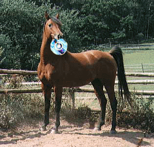

Rhombic Research
Equine Technology
Other Pathways
BBC Science/Tech News
The BBC are apparently quite popular in the British Island. Mostly in
english.
New
Scientist
Whilst not as advanced as ourselves, there is some
research here that
demands attention. |
EQUINE TECHNOLOGY

Alert!
We, at the synapse, have recently discovered a disturbing phenomenon. All horses have the
ability to play compact discs in their mouth. The docile animals' teeth are specially
shaped to support the disc, and by implementing a well-organised chewing motion they have
the ability to listen to music via their gums.
Obviously this has sever implications for the record industry who now have to publish all
new cds with special inlay cards that are comprehensible by equine lifeforms. After
lengthy research, it has been found that many small ponies have been reading data cds as
well, and in fact in the Rhombic Paddock there is a Small Shetland running office 97.
The possibilities are endless. We have been in touch with our horse expert Doctor Pipp
who has provided this statement.
"We, in the paddock, have been observing the media useage of our animals for some
time and
are concerned that they may be exploited due to their relatively large memory capacity.
We fear that horses heads may be being used by the mafia to run some of their advanced
D.E.A.T.H.T.H.R.E.A.T. software systems, thus rendering the animal relatively useless for
galloping. We also fear that digital media may be being unfairly used within races so
that the horse can be pre-programmed with the route of the race beforehand. This will
give them an unfair advantage. However, we do acknowledge the networking possibilities of
using a number of horses to run business software. It may not be long before companies
replace many car-parking areas with stables and paddocks to take advantage of this
discovery."
Our technical division has estimated that a one horsepower horse can be used both for
music and data simultaneousy by remembering the tunes on the music cd and whinneying them
back to the user while the data cd is playing. This is highly advanced technology.
The department of anti-technology is extending its worldwide ban to include all digitally
functioning mammals and sea-birds including penguins, which it suspects have the ability
to determine their exact geographical position by GPS satellite.
You have been warned.
Doctor Fumm Pervuader
Equine Technology Expert and Foremost Truncational Corner Improver
|
|